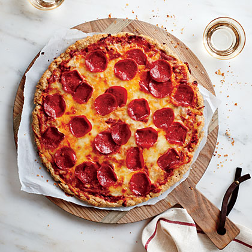

pepperoni pizza

Description
Today we will be making an italian style pizza, using fresh
ingredients.This is great for a weekend meal with the family!
Ingredients
- ½ cup warm water (100° to 110°)
- 2 teaspoons granulated sugar
- 1 package dry yeast (about 2 1/4 teaspoons)
- 3.65 ounces white rice flour (about 3/4 cup)
- 1.4 ounces sweet white sorghum flour (about 1/3 cup)
- 1.4 ounces tapioca flour (about 1/3 cup)
- 1.7 ounces potato starch (about 1/3 cup)
- .9 ounce flaxseed meal (about 1/4 cup)
Steps
- “Bloom” the yeast by sprinkling the sugar and yeast in the warm water.
Let sit for 10 minutes, until bubbles form on the surface.
- In a large bowl, combine the flour and salt. Make a well in the middle and add the olive oil and bloomed yeast mixture.
Using a spoon, mix until a shaggy dough begins to form.
- Once the flour is mostly hydrated, turn the dough out onto a clean work surface and knead for 10-15 minutes.
The dough should be soft, smooth, and bouncy. Form the dough into a taut round.
- Grease a clean, large bowl with olive oil and place the dough inside, turning to coat with the oil. Cover with plastic wrap.
Let rise for at least an hour, or up to 24 hours.
- Punch down the dough and turn it out onto a lightly floured work surface.
Knead for another minute or so, then cut into 4 equal portions and shape into rounds.